Keyboard Collection (will continue to update)
Redragon K552 (Red Lighting, Outemu Blue, White)
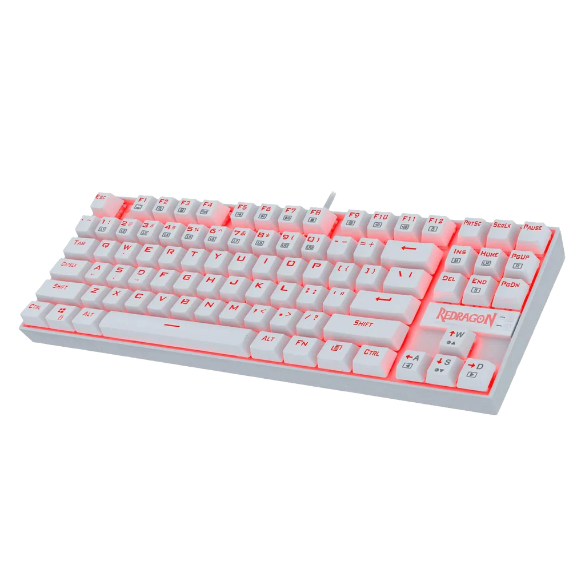
The one that started it all
Keychron C1 Hotswap (the one that made me crazy for this hobby lol)
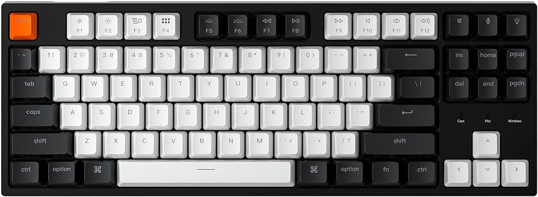
sold, but keeping here for being the straw that broke the camel's back to my keyboard addiction
(Barebones) GMMK Compact 60% Hotswap
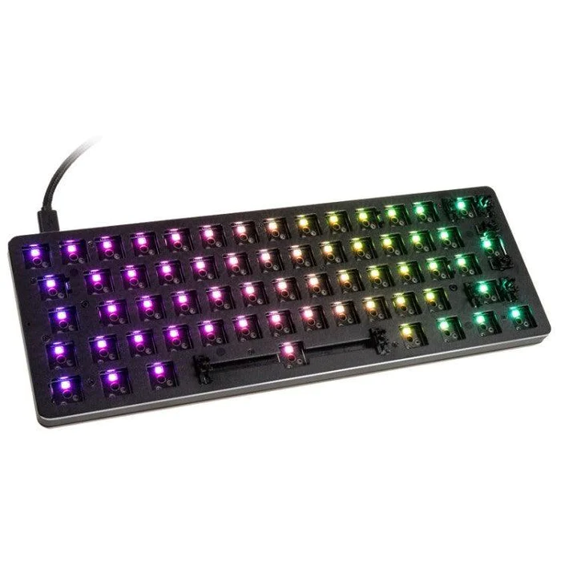
Installed Akko Lavender and random Amazon keycaps
(Mathi keyboard) Durgod Taurus K320 (No Lighting, Cherry MX Red, White/Grey)
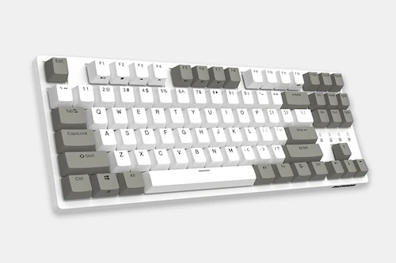
Where I started my journey of collecting my favorite players' keyboards
(Vaxei keyboard) iKBC CD87 V2 "Typeman" (No Lighting, Cherry MX Black, Black)
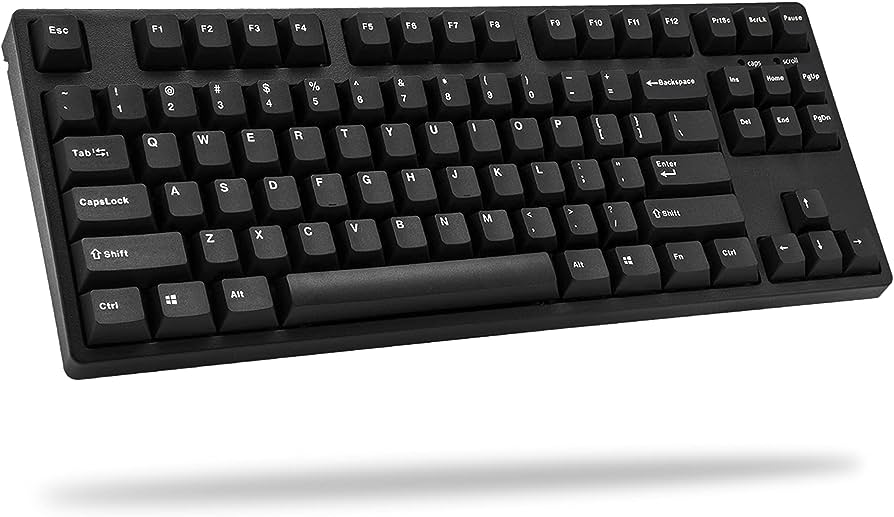
My GOAT's keyboard
HyperX Alloy Origins Core 65% PBT (RGB, HyperX Red, Black)
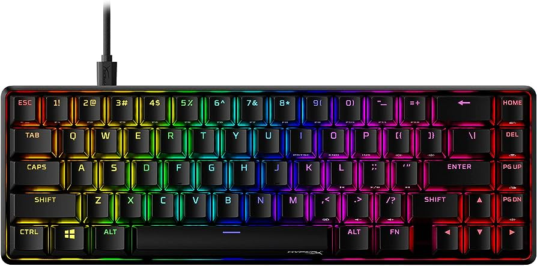
gave it to a friend who very much needed it
Royal Kludge M75 (RGB, Kailh Speed Silver, White/Blue)
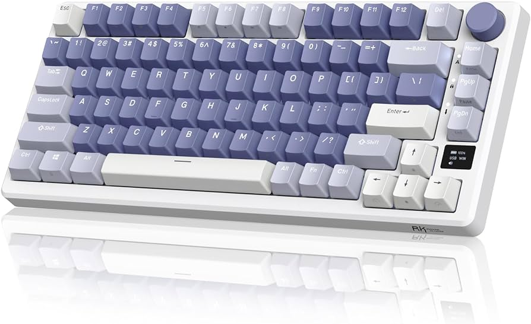
gave it to my little sister
HyperX Alloy Origins Core TKL (RGB, HyperX Red, Black)
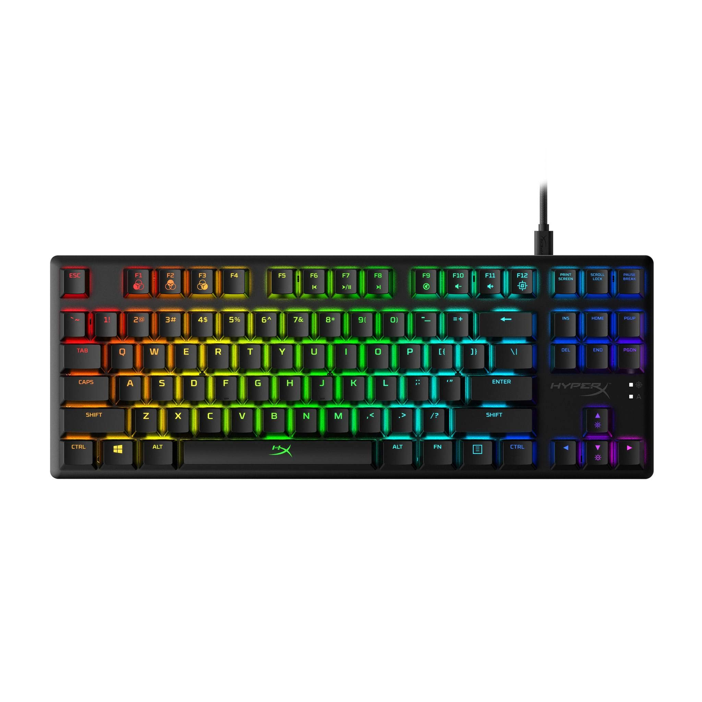
all around good keyboard for gaming, will say that quality went down after HyperX got bought by HP since I broke a stabilizer on the left shift key while simply trying to remove the keycap with a proper tool
Wooting 60 HE
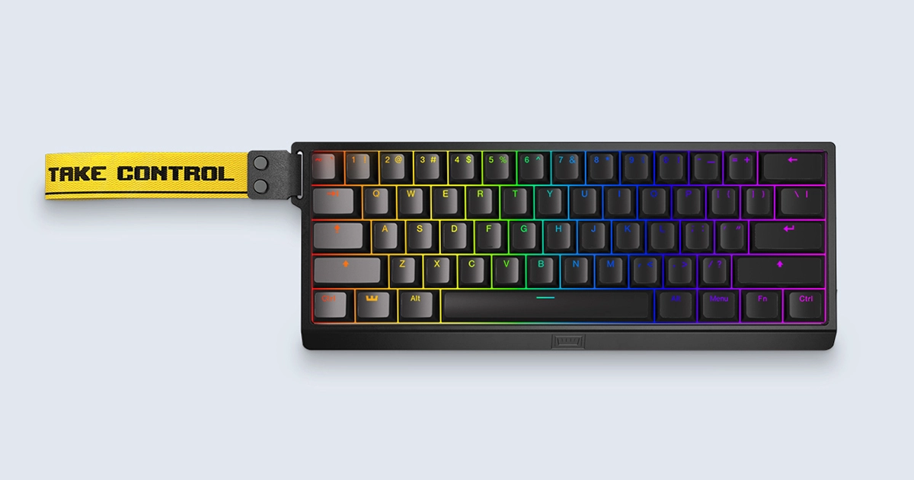
my first rapid trigger keyboard, pretty solid overall, lekker v1 switches don't sound that good and stabilizer lubing from the factory wears off pretty quick
Wooting 80 HE
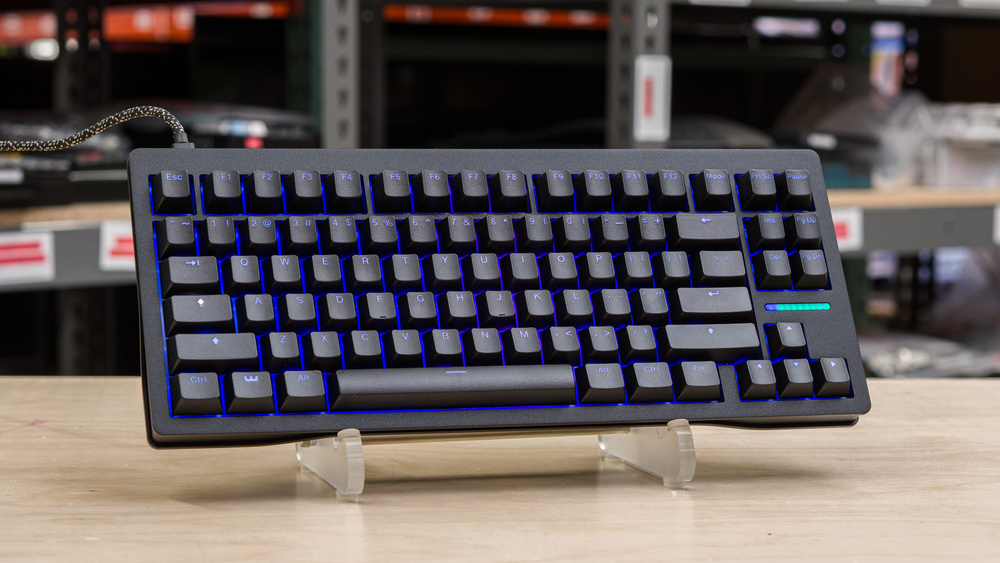
second rapid trigger keyboard, lekker v2 switches were a good improvement, but stabilizer lubing problem still exists
Vortex Angle TKL (Gateron Oil Kings)
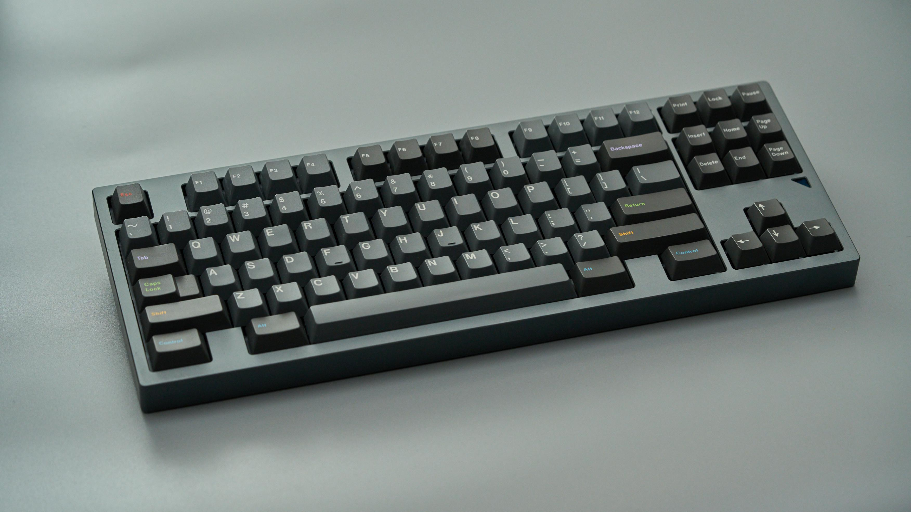
i have the black case. great sounding keyboard with the oil kings but there is a software issue. when putting my pc to sleep with the keyboard plugged in and waking it up, it'll spam one key or it just doesn't work. unplugging and replugging fixes it but it's just annoying.
Pulsar PCMK2 HE TKL
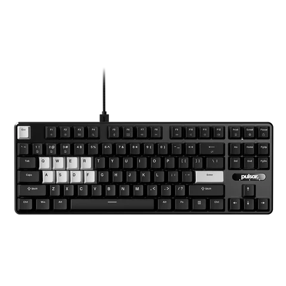
nice out of box experience
Pulsar PCMK3 60 HE

once again, nice out of box experience, i will say that it sounds different compared to the PCMK2 TKL in a good way. the switches are the same as the PCMK2 but the small form factor makes it sound different i'm guessing.
Akko 5087S (Gateron Zero Degree Silent switch, ePBT keycaps)
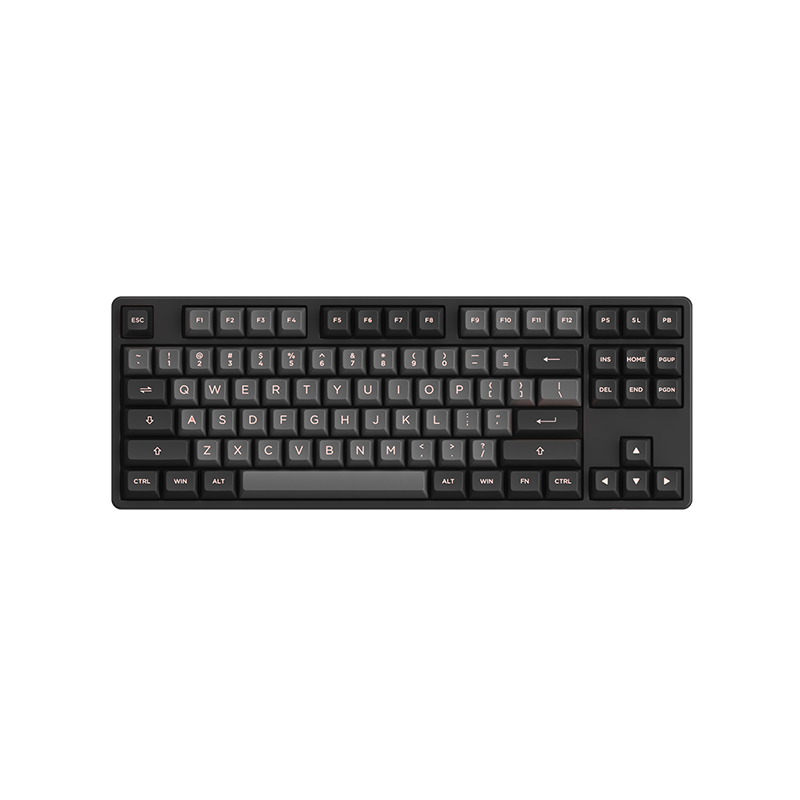
wrong keycaps in picture, but it's my favorite silent keyboard. i am thinking of getting switches that are even more silent though
Monsgeek M7 (Kailh Speed Silver)
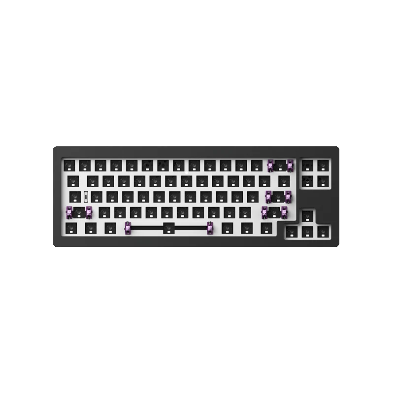
the brick. great keyboard, space bar stablilzer lube did wear off quickly though
Deck Hassium Turtle Ship Edition (Cherry MX Red)
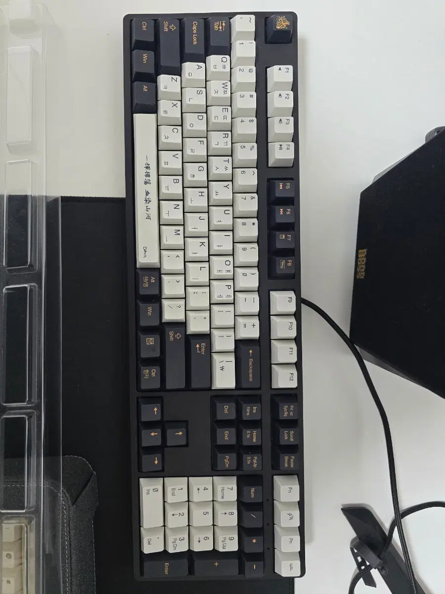
personal chase keyboard of mine since it was only sold in South Korea, personal favorite of mine. bought it from a guy on twitter who lives in Italy. i'd love to find the TKL version of this keyboard but it being a south korea exclusive means i have to search on sites like global bunjang and hope the seller doesn't cancel on me like when i tried to get the TKL version back in summer 2025 haha
Rainy75 (Stock)
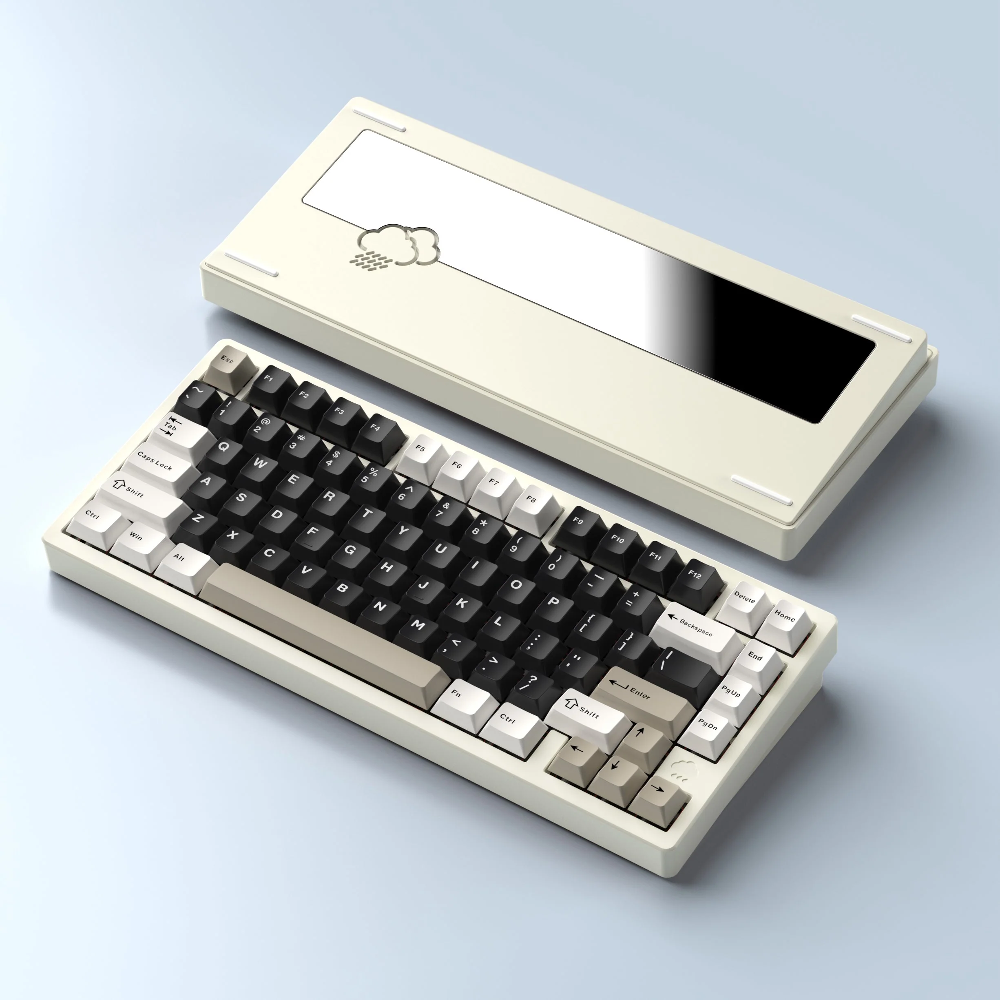